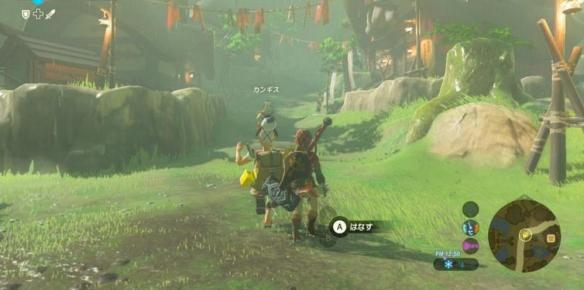
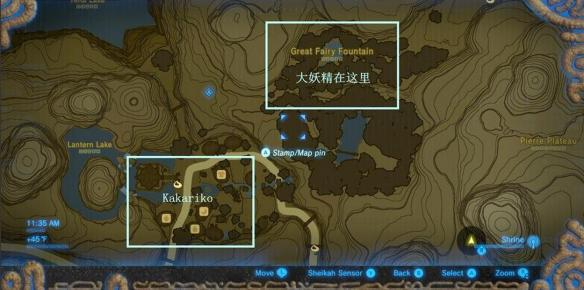

【寻找妖精之泉】Find the Fairy Fountain / 妖精の泉探し
这个主线任务比较简单，算是个插曲。
在 Hateno / ハテノ村 解锁西卡石板的拍照功能后，回到 kakariko / カカリコ村。
和村中女神像边的老人 Pikango/カンギス 对话，他会要求玩家陪他去找妖精之泉。

妖精之泉的位置，我们第一次来 kakariko / カカリコ村 时就找到啦。

陪着老人一路上山去妖精之泉，走到一半老人就走不动了，只好委托我们去拍个妖精之泉的照片，回来给他看。
喏，就是这样的位置，拍个照即可。